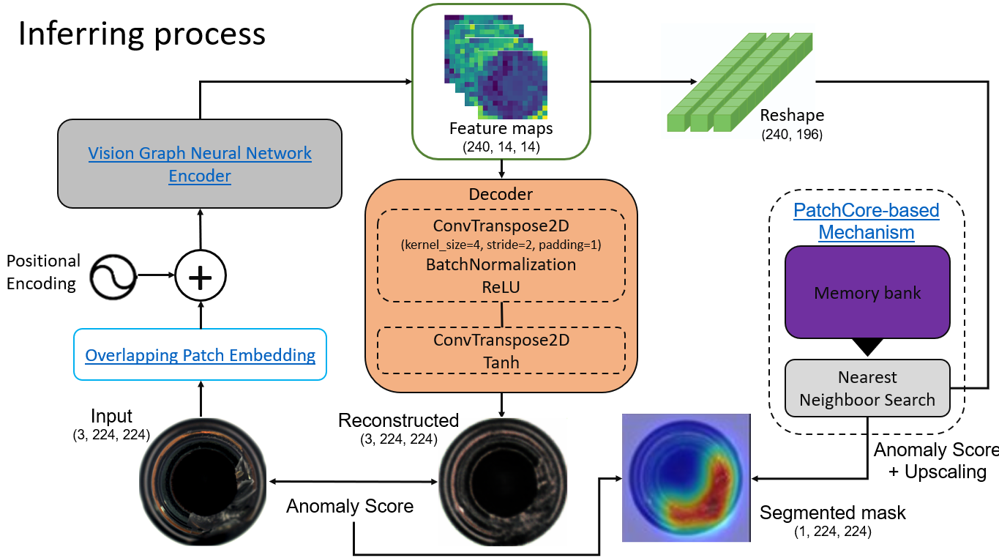
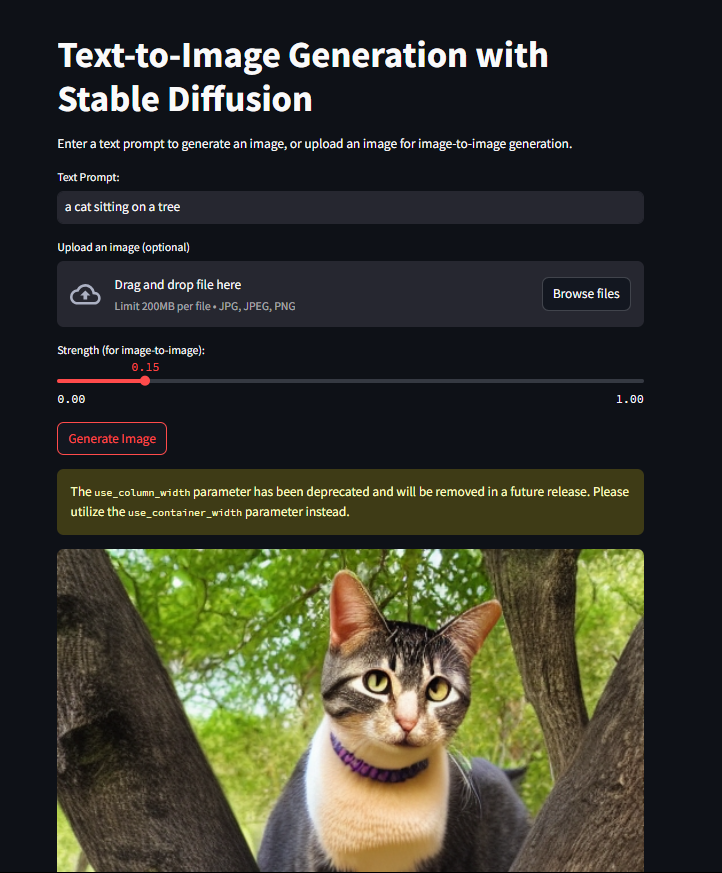
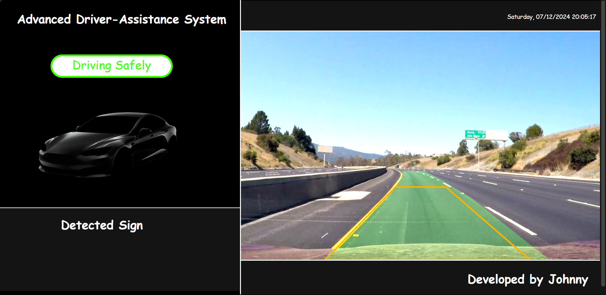
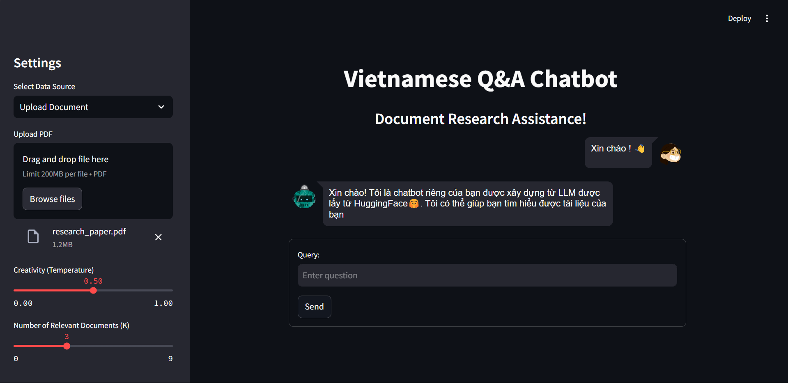
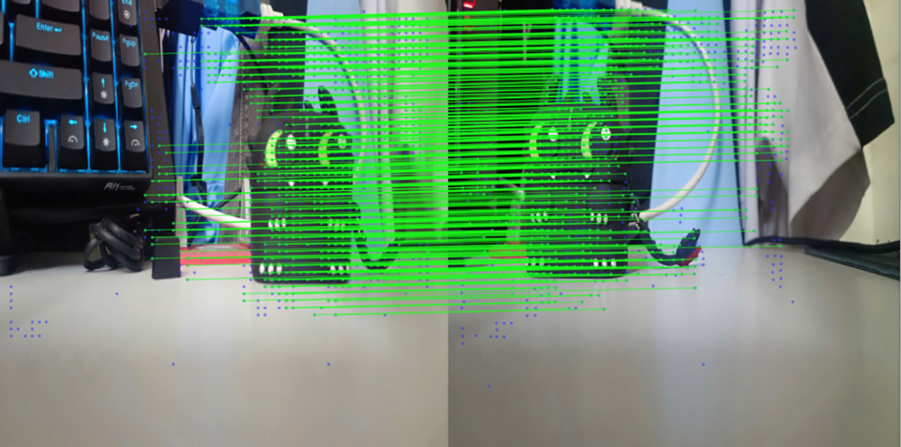
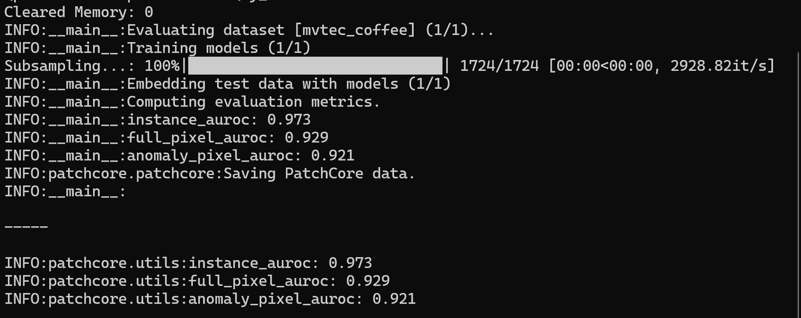
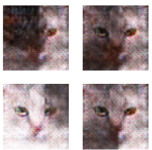

Johnny
I'm
Junior A.I Engineer that love automatically accomplished everything using the strength of Artificial Intelligence.
About Me
My introduction
I am well-versed in Python, Tensorflow, PyTorch, and many other Programming languages as well as other frameworks and libraries, which allows me to perform most of Computer Vision, Data Science tasks, and I also have a few experirence with NLP. Additionally, I have experirence working with Web Full-stack Development, Winform, or other software development.
Programming Languages
Python
C#
C
C++
JavaScript
CSS
MicroPython
Computer Vision
Tensorflow
PyTorch
Yolo
Open CV
Natural Language Processing
Tensorflow
PyTorch
Langchain
Data Science
Pandas
NumPy
Matplotlib
Power BI
Scikit-learn
Scipy
Projects
Completed
GPA
Experience
Projects Showcase
Unsupervised Industrial Anomaly Detection with Vision Graph Neural Network-based Autoencoder

PyTorch
FAISS
MLflow
Scikit-learn
- Fine-tuned Vision GNN backbone for better feature extraction and enhanced ability to capture spatial dependencies in images.
- Combined with KNN-based algorithms for pixel-level anomaly identification, improving segmentation ability by 31.4%.
- Utilized FAISS for efficient storage of normal features and improved retrieval capabilities.
- Achieved 0.98 anomaly instance AUROC, 0.93 pixel-wise AUROC, and 0.931 anomaly-pixel AUROC on MVTec AD dataset across 15 industrial products.
Text-to-Image with Stable Diffusion

PyTorch
Diffusion Model
Hugging Face Transformers
Streamlit
- Successfully reimplemented Stable Diffusion from the paper "High-Resolution Image Synthesis with Latent Diffusion Models" using PyTorch.
- Designed and built the model architecture from scratch, including the U-Net structure for denoising and attention mechanisms for improved image quality.
- Developed a Streamlit web application for text-to-image and image-to-image generation with adjustable parameters and real-time preview.
Advanced Driver-Assistance System

PyTorch
TensorFlow
YOLO
OpenCV
Flask
- Fine-tuned YOLOv8 on Vietnamese traffic dataset, achieving 0.79 mAP50, 0.76 precision, and 0.77 recall.
- Designed a lightweight U-Net based model in TensorFlow for lane segmentation with 97.2% pixel-wise accuracy.
- Optimized models to TensorFlow Lite format with multi-threading for real-time performance (<30 ms/frame).
Vietnamese Chatbot using Retrieval-Augmented Generation

Python
LLM
LangChain
RAG
FAISS
- Developed an intelligent conversational agent for Vietnamese documentation inquiries.
- Utilized LangChain to manage interactions between LLMs and retrieval systems for accurate information fetching.
- Implemented FAISS for efficient vector storage and retrieval from user-uploaded PDFs.
- Built a Streamlit interface for seamless user interaction.
Simple Stereo Camera Setup

Python
Image Processing
OpenCV
Feature Matching
- Perform camera calibration for getting camera matrix (camera informations)
- Deployed LoFTR for feature matching between 2 images taken by phone to simulate the condition of a stereo camera.
- Apply formula to calculate the distance to the earphone case (self selected bbox to simulate object detection), remove outlier using z-score.
Coffee Can Colorbur Detection

Python
PyTorch
Scikit-learn
FAISS
- Led a team of three to reimplement and optimize PatchCore model proposed in the paper”Towards Total Recall in Industrial Anomaly Detection”.
- Trained the model from scratch for industrial anomaly detection task on MVTec AD dataset and a custom dataset of colorbured cans in a spinning wheel.
- Integrated FAISS for more efficient features retrieval, increase the inference speed 20 times faster than using non-vector databases.
- Archived 0.973 in anomaly instance AUROC, 0.929 pixel-wise AUROC and 0.921 anomaly-pixel AUROC.
Unconditional Image Generation with DCGAN

Python
TensorFlow
MLflow
GAN
- Developed a Deep Convolutional Gerative Adversarial Network (DCGAN) for generating cat face images fron random noise.
- Implemented the model from scratch using Tensorflow.
- Tracking and monitoring process using MLflow.
Get in touch
Do you have a project in your mind, contact me hereFind Me
Email: taifa2907@gmail.com
Tel: +84 774 707 297